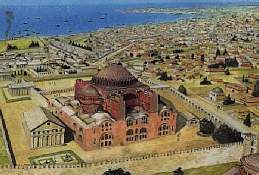
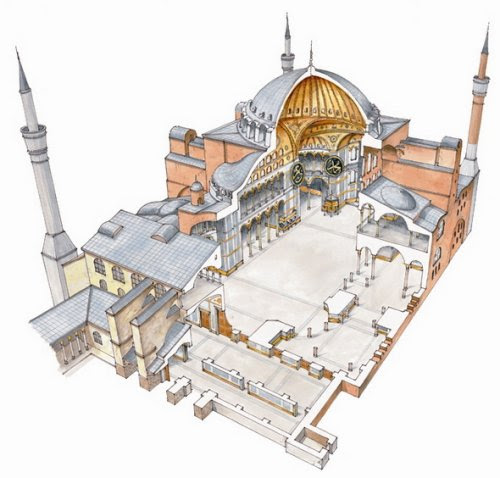
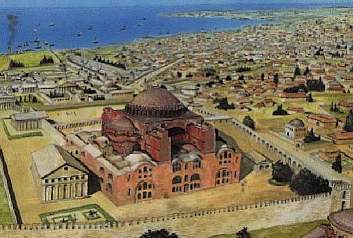
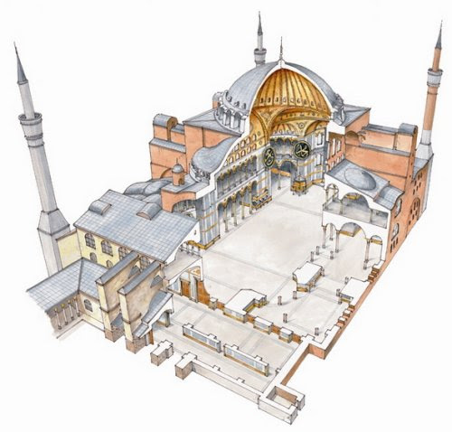

Restes materials
Església de Santa Sofia a Constantinoble



Son Peretó a l'actual Manacor
Son Bou a l'actual Menorca
Església de Santa Sofia a Constantinoble


Son Peretó a l'actual Manacor
Son Bou a l'actual Menorca
Llicenciat sota la Llicència Creative Commons Reconeixement CompartirIgual 4.0